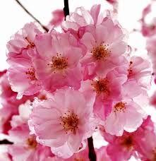
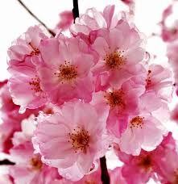

bunga bunga memiliki warna cerah dan mekar sepanjang tahun
bunga bunga tropis antara lain bunga sepatu, teratai, kamboja, mawar, kenanga dll
bunga subtropis memiliki musim tertentu untuk berbunga
contoh bunga subtrpois bunga sakura dll


 
